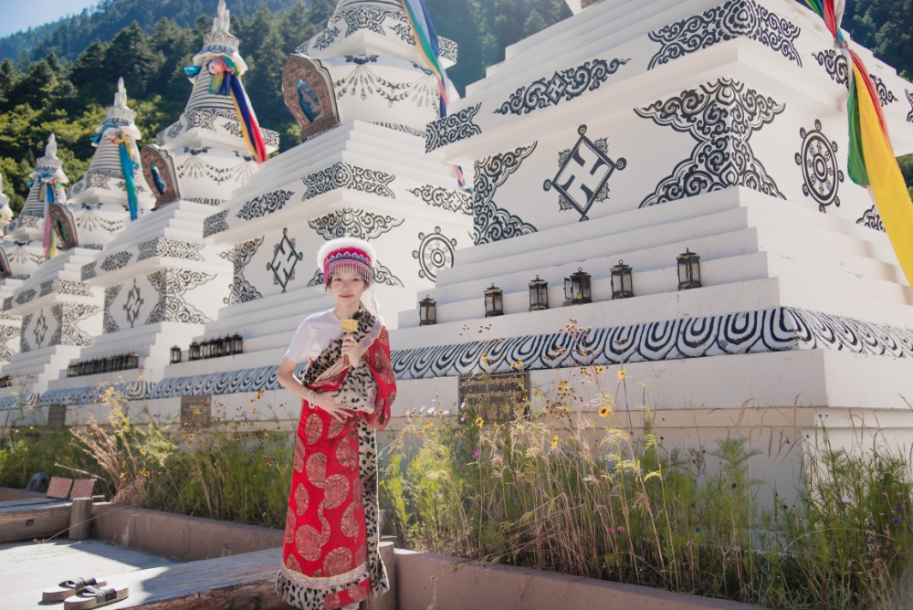
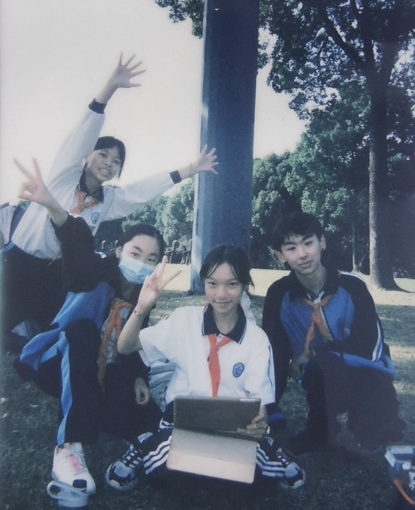
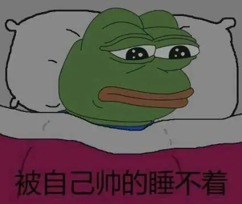
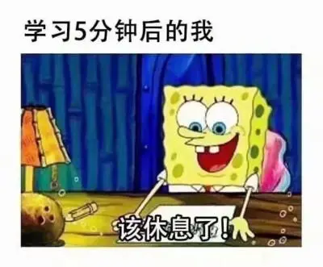
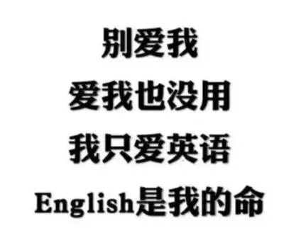
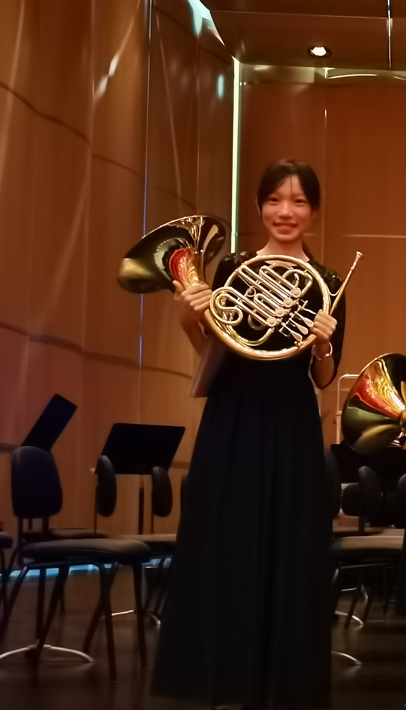
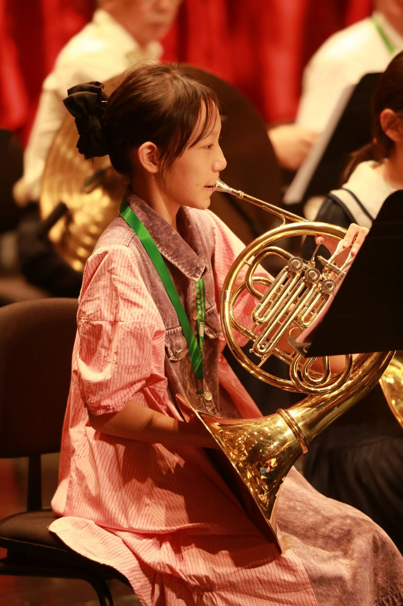
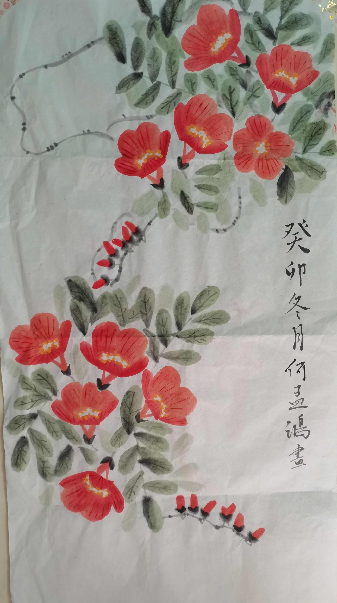
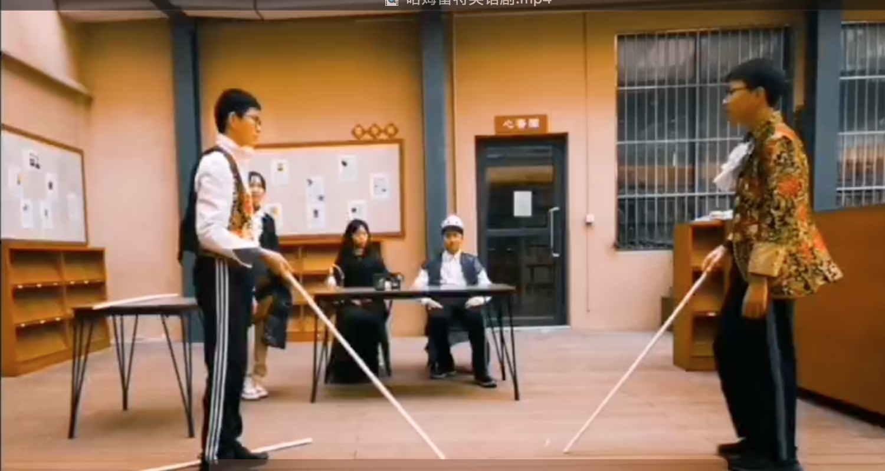
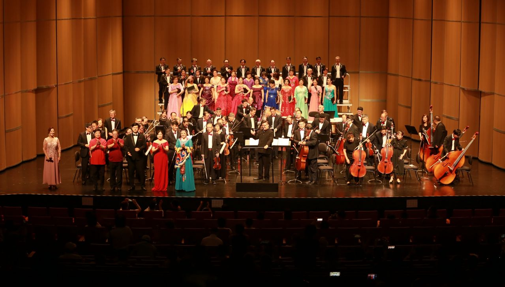

<!DOCTYPE html>
<html>
<head>
<title>何孟鸿Camelia的个人主页</title>
<link rel="ca" type="text/css" href="style.css">
</html>
<style>
        body {
            font-family: Arial, sans-serif;
            background: #f8f7c3;
            background-size: cover;
            color: rgb(83, 62, 175);
        }

        header {
            background-color: #e4cff8;
            padding: 20px;
            text-align: center;
            color: rgb(248, 247, 193);
        }

        main {
            margin: 15px;
            padding: 15px;
            background-color: rgb(255, 255, 255);
            min-height: calc(100vh - 130px);
        }

        .gallery {
            display: flex;
            justify-content: center;
        }

        .gallery img {
            width: 200px;
            height: 200px;
            margin: 15px;
        }
    </style>
    </script>
</script>
</head>
<body>
<header>
<h1>何孟鸿Camelia的个人主页</h1>
</header>
<main>
<section>
<h2>自我介绍 Self Introduction</h2>
<p>你好(´･ω･`)，我是 <strong>何孟鸿Camelia</strong>，今年<strong>14</strong>岁，是一名初二学生。我来自<strong>上海</strong>。</p>
</p>    我养了两只猫，最喜欢的动漫人物是<strong>山口忠</strong>。</p>
</p>    如果可以，我希望自己能够考入<strong>上海中学</strong>，大学毕业后成为一名<strong>律师</strong>。</p>
</p>    我希望自己以后能够去<strong>荷兰</strong>旅游。</p>
</p>    <strong>愿我们能够携手共进，同筑诗和远方。</strong><p>
</h2>
<div class="gallery">
   


</div>
</section>
<section>
  <h2>关于我 About Me</h2>
  <div class="gallery">
      
      
      
  </div>
<section>
<h2>我进行的一些活动 Activities I Am Taking Part In</Inp></h2>
<p>这里选取了一些我正在进行或刚刚结束的活动:</p>
<ul>
<li>海上帆船航行</a></li>
<li>圆号考级</a></li>
<li>自学漫画</a></li>
<li>排演英语剧</a></li>
</ul>
</section>
</section>
<h2>我的一些小成就 My Little Achievements:</Inp></h2>
</p></li>书法10级</a></li></p>
</p></li>圆号7级</a></li></p>
</p></li>乐理3级</a></li></p>
</p></li>入围上海市市级中小学生古诗文大赛决赛（前240名）</a></li></p>
</p></li>“未来媒体人”白皮书三等奖</a></li></p>
</p>以及……</p>
</p></li>一些校内比赛、竞赛等一、二等奖</a></li></p>
</section>
</section>
<div id="carousel" class="carouse">
    
    
    
    
    </p>
    
</body>
</html>
</div>
<div style="text-align:center">
    <span class="dot" onclick="currentSlide(1)"></span>
    <span class="dot" onclick="currentSlide(2)"></span>
    <span class="dot" onclick="currentSlide(3)"></span>
    <span class="dot" onclick="currentSlide(4)"></span>
    <span class="dot" onclick="currentSlide(5)"></span>
</div>
<h2>我的兴趣爱好 My Interests:</h2>
<ul>
<li>吹圆号</li>
<li>阅读</li>
<li>户外运动</li>
<li>国画、书法</li>
</ul>
</section>
</section>
<h2>旅行游记</h2>
</p>以青春扬帆起航——记一次三亚帆船游</p>
</p> “大风起兮云飞扬”。我们在重重海浪中不断超越自我，留下青春的印记。以青春热血为帆起航，突破生理的桎梏，实现精神上的成长。虽现在已不再破浪，但我们仍然志在千里，心在远方。那是拼搏，是超越，更是希望。</p>
</p>愿我们都能“乘风破万里浪”“直挂云帆济沧海”。</p>
<div>
  <source src="2月13日.mov" type="viedo/mp4">
  <video width="100%" controls>
      <source src="2月13日.mov" type="video/mp4">
      对不起，您的浏览器不支持视频播放。
  </video>
</div>
</section>
<section>
<h2>我的联系方式 Contact Me：</h2>
<p>你可以在这里联系到我:</p>
<li>classin账号: <li>13817766101</li>
</ul>
</section>
</main>
</body>
</html>